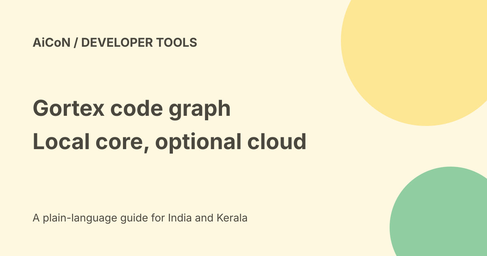

Gortex: a local code graph, MCP access and privacy limits
Gortex indexes code into a graph that a coding agent can query. It can help find symbols, callers and dependencies without opening every file. Its local core is open source, but connecting a cloud agent still changes where code may go.

What is a code graph?
A graph is a map of items and their links. In a repository, those items may be functions, classes and files. Links can describe imports, calls and dependencies.
Gortex exposes that map through a command line, MCP, an HTTP API and a web interface. MCP is a way for AI tools to connect to an agent. A code map can narrow a search, but it does not prove that every relationship or generated edit is correct.
Read the language count carefully
The project lists 257 languages or grammars. Its homepage divides extraction into tiers: about 30bespoke tree-sitter parsers for deeper analysis, about 60regex parsers for niche or older languages, and about 165signature-only parsers.
Those levels are not equal. Do not assume all 257 have the same call resolution, type analysis or editing accuracy. Check the current language documentation for your repository.
What does the 50x token claim mean?
The project advertises up to 50times fewer tokens per response. It also records savings by comparing returned source information with a full-file read that it stands in for.
This is project-reported evidence, not a guarantee that an entire coding task or bill will shrink 50times. Extra queries, wrong context, agent prompts and output tokens still matter. This guide did not install the binary or reproduce its benchmarks.
Free, paid and India verdict
The repository declares Apache 2.0. That licence permits use and modification under its terms, including commercial use, but keep the notices and other requirements.
The local indexing core does not require a hosted model subscription. Optional cloud model providers and your coding agent can charge separately. A free graph engine does not make every connected service free.
The project provides macOS, Linux and Windows routes. We did not test installation on an Indian device, Malayalam code comments or a particular IDE. There is no verified India-specific promotion in this guide.
Local core is not a promise of zero data sharing
The repository says the basic binary starts without network access or a model download. Its semantic-search default uses an embedded table; external model and embedding options are opt-in.
The LLM documentation describes optional providers including cloud services and local tools. If a connected cloud coding agent receives source from Gortex, that agent's data policy applies. Choosing a local index does not automatically keep the whole workflow offline.
Telemetry and stored data
The telemetry documentation says usage collection is off by default. When enabled, it describes coarse tool and command counts, not source code, paths or symbol names. It says nothing is transmitted unless an endpoint is configured.
The documentation also describes a persistent local identifier and buffered records. These are the project's statements, not an independent privacy audit. Use the telemetry-status command and inspect your actual configuration.
A cautious first setup
- Read the repository, licence, release notes and installation documentation.
- Use a small non-sensitive side repository first. Keep a clean backup or commit.
- Choose a signed release for the correct operating system. Check the documented hash and signature process.
- Read an install script before running it. Do not paste a pipe-to-shell command just because it is short.
- Review changes to your PATH, shell files and agent configuration.
- Start with local indexing and read-only questions about known functions.
- Compare the graph answers against the files yourself.
- Leave cloud providers off until you understand their costs and disclosure rules.
- Review generated changes, run tests and keep approval before applying broad edits.
The installer documentation says it can edit shell configuration and that agent setup can write user-level integration files. A setup command is not only a read operation. No installer or repository was run for this guide.
What changed since the original post?
The language total and token headline remain project claims. We add extraction tiers, optional cloud features, telemetry limits and installer effects. The current documentation exposes different tool-surface sizes depending on the client or preset; do not treat one catalogue count as universal.
Frequently asked questions
Is it a model?
No. It is code-intelligence infrastructure that can connect to models or coding agents.
Is everything offline?
The core can be local. Cloud agents and optional providers are separate.
Will it save 50times on my bill?
No such result is guaranteed.
Can I trust every dependency link?
No. Parsing and resolution depth vary. Check important results against source.
Sources: Official product page · Official repository and licence · Telemetry documentation · Optional LLM documentation · Installation documentation · Token-savings method. Checked 7 October 2026.